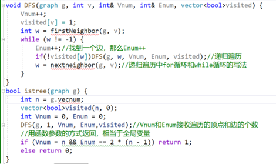
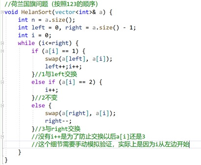
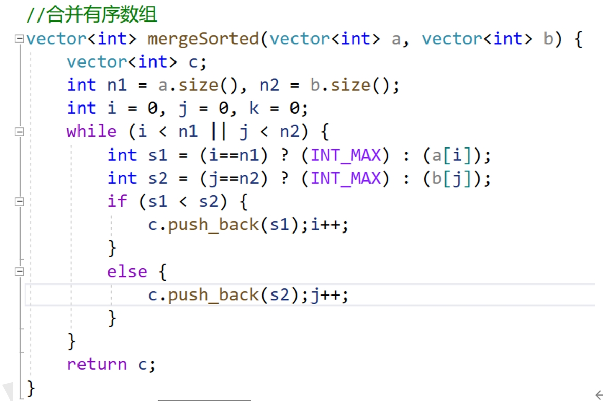

计算机科学基础细节知识总结——数据结构
作者： 禾旺
目录：- 第一章：概述
- 第二章：线性结构
- 第三章：树形结构
- 第四章：图
- 第五章：集合
- 第六章：查找
- 第七章：排序
第一章：概述
- 算法大题可以使用一般的解法就不要花太多时间，可以使用set、map、priority_queue、vector等数据结构，而考察具体的实现时，要写出具体操作（红黑树不可能，但是堆的实现（adjust）有可能）
- 时间复杂度通常指最坏情况下的时间复杂度，比如未优化的并查集高度为n
- 数组的逻辑不要想得太复杂，“三元组“题的方法是最普遍而简单的从0到n-1，要会设置一些结果变量如Dmin
第二章：线性结构
- 将长度分别为m、n的两个有序表归并成一个有序表最少比较次数为min(m,n)，最多比较次数为m+n-1.
- 在双端队列的序列模拟中要严格模拟，不要记忆结论，栈也是；
- 在数组中找到所有两两之和等于x的数对方法：快速排序、从两端开始找（若a[i]+a[j]<x,则i++，若a[i]+a[j]>x，则j--，否则输出a[i] a[j] i++;j--;直到i>j）
- 栈和队列拥有相同的逻辑结构、不同的是运算
- 判断链表是否中心对称可以使用栈
- 链式存储的队列如果不带头结点，则front和rear分别指向队首和队尾节点，如果带头结点，则front指向头节点，rear指向队尾节点；在删除时队头和队尾可能都需要修改（最后一个的时候要把rear=front）
- 队列的应用：页面替换算法、进程调度、缓冲区. 栈的应用：括号匹配、迷宫求解、递归、进制转换
- 双栈：可以在O(1)时间内实现push、pop、min操作，主栈是普通栈，用来实现push和pop，辅助栈和主栈是同步的，每次push都将 stack_min[top++]=(x <min)?x:min; 每次pop时辅助栈也会pop，这样辅助栈栈顶永远是当前的最小值。
- KMP算法中要求的最关键的init即从-1、0开始的next数组，根据它产生相应的next（都+1）和nextval（从后往前，在init上将init[i]与自身相等的再往前迭代一次）数组。
- 循环链表的逆置也使用头插法
- 同一组不重复输入序列执行不同的入栈出栈操作，得到的结果也可能相同，因为初态终态并没有限制
- 循环队列“在队列末尾使用牺牲一个单元的方法判断队空队满“，队空条件为rear==front，队满为（rear+1）%n==front，rear指向的是队尾元素的下一个存储单位
- 如果线性表相关算法题的具体操作代码太长，则可以写一部分伪代码，节省答题空间
- 矩阵每行有序、每列有序的查找算法：
- int i = 0, j = n-1；
- while (1) {
- if (a[i][j] == x)break;
- if (a[i][j] > x)j--;
- else i++;
- }
- Void reverese(listNode* L){ //l指向头节点
- listNode* p=l->next;
- l->next=NULL;
- while(p){
- listNode* temp=p;
- p=p->next;
- temp->next=l->next;
- l->next=temp;
- }
- }
- listNode* ins(listNode* A,listNode* B, listNode* C){
- listNode* a=A->next,*b=B->next,*c=C;
- while(a&&b){
- if(a->data==b->data){
- listNode*p=new listNode(a->data);
- c->next=p;
- c=c->next;
- }
- Else if(a->data>b->data)b=b->next;
- Else a=a->next;
- }
- }
- Dnode* locate(Dnode* l, int x) {
- //用于实现链表根据访问频率使元素向前移动
- for (Dnode* p = l->next;p != NULL;p = p->next) {
- if (p->data == x) {
- p->fre++;//频度加1
- Dnode* xpre = p->pre, * xnext = p->next;//局部变量，函数结束即失效，不会占用内存
- xpre->next = xnext;
- xnext->pre = xpre;//完成摘下
- Dnode* pos = l;
- for (;pos->fre > p->fre;pos = pos->next);//找到第一个fre小于等于p的节点，准备将插到前面
- Dnode* ppre = pos->pre;
- p->next = pos;
- pos->pre = p;
- ppre->next = p;
- p->pre = ppre;//双向链表的头插法
- return p;
- }
- }
- return NULL;
- }
- listNode* loop(listNode* l){
- listNode*p=l;
- unordered_set<listNode*>se;
- while(1){
- if(se.count(p))//如果se里已经有p
- return p;
- else{
- se.push(p);
- p=p->next;
- }
- }
- }
第三章：树形结构
- 把二叉树所有节点（包括NULL和空位）都保存（规范顺序存储，正逆向都要注意空位要补全）
- 按层次从上到下、同一层从左到右的顺序存储在数组中，不保存NULL节点（不规范的顺序存储）
- 顺序存储的第i个节点的祖先是ceiling(m/2)-1（编号从0开始，如果从1开始就另外推算推算）,依此可以寻找其各代祖先
- 二叉树是逻辑结构，但线索二叉树是加上线索之后的二叉链表结构，属于物理结构
- 非空二叉树（空二叉树不成立！）的叶子节点数目等于度为二的节点个数加一（n0=n2+1）
- 卡特兰数：C(n,2n)/(n+1);
- 路径长度计算需要计算所有的叶子节点;
树的路径长度是根到每个节点的路径长度之和;
哈夫曼树带权路径长度是所有叶节点的带权路径之和;
树的度是所有节点度的最大值; - 给定权值总数为n的哈夫曼树节点总数为2n-1
- 哈夫曼树中如果有负权值则叶子节点到根节点的路径序列不一定有序
- 哈夫曼编码要小心0和1的走向、只有叶节点可以编码
- 判断树是否镜像： Ismirror（a,b） 判断两棵树是否镜像（递归比较ismirror(a->left,b->right)&& ismirror(a->right,b->left)），再用mirror（root）
- 树的算法题一定要会非递归的后序遍历，找叶子节点和计算深度之用
- 一般情况下，先思考使用递归的先序、后序遍历算法；
- 在孩子兄弟表示法存储的树中，主要的“左右孩子”是“孩子节点”和“兄弟节点”，故在递归的时候可以把这两个当作二叉树的左右孩子来写代码
- 将二叉链表中的二叉树放进数组里：
- Void trans(TreeNode* root, int b[], int k){
- If(root){
- b[k]=root->data;
- trans(root->left,b,2*k+1);
- trans(root->right,b,2*k+2);
- }
- }
buildTreeNode_from_to( int pre[], int l_pre, int r_pre, int in[], int l_in, int r_in)
函数对“由中序、先序遍历序列构造二叉树”等问题求解
中序遍历非递归版本
- Void preOrder(TreeNode* root){
- If ( !root ) return;
- TreeNode* p=root;
- Stack<TreeNode*> st;
- While( !st.empty() || p ){
- If( p ){
- Visit(p);
- St.push(p);
- P=p->left;
- }
- Else{
- P=st.top();
- St.pop();
- P=p->right;
- }//else
- }//while
- }
后序遍历非递归版本
- Void inOrder(TreeNode* root){
- If ( !root ) return;
- TreeNode* p=root;
- Stack<TreeNode*> st;
- While( !st.empty() || p ){
- If( p ){
- St.push(p);
- P=p->left;
- }
- Else{
- P=st.top();
- St.pop();
- Visit(p);
- P=p->right;
- }//else
- }//while
- }
- Void inOrder(TreeNode* root){
- If ( !root ) return;
- TreeNode* p=root , * r=NULL;
- Stack<TreeNode*> st;
- While( !st.empty() || p ){
- If( p ){
- St.push(p);
- P=p->left;
- }
- Else{
- P=st.top();
- If ( p->right && p->right!=r ){
- P=p->right;
- }//如果右边有 且没有被访问过 则转向右边
- Else {
- St.pop();
- Visit(p);
- R=p;
- P=NULL;
- }//否则访问p，四步缺一不可
- }//else
- }//while
- }
- void levelOrderLev(TreeNode* root) {
- if (!root) return;
- queue<pair<TreeNode*,int>> qu;
- TreeNode* p = root;
- qu.push(make_pair(p,1));
- while (!qu.empty()) {
- p = qu.front().first;
- int lev = qu.front().second;
- qu.pop();
- if (lev != qu.front().second || qu.empty()) {
- //表明已经弹出当前层的最后一个节点
- visit1(p, lev);
- }
- Else visit2(p,lev);
- if (p->left)qu.push(make_pair(p->left,lev+1));
- if (p->right)qu.push(make_pair(p->right,lev+1));
- }
- }
第四章：图
- 默认认为“有向图”是联通的，有向图邻接矩阵中，如果主对角线一下元素全为0，则其拓扑序列一定存在但不唯一（要会举例），如果主对角线以上元素全为1，主对角线以下元素全为0，则拓扑序列唯一;如果一个有向图存在有序拓扑排序序列，则其邻接矩阵一定是三角矩阵
- 有向图这种数据结构默认没有插入和删除操作
- 有向图边<v,w>中，v表示弧尾，w表示弧头，箭头向右打
- “一个数字的含义是什么？”可以为“路径的条数”而不是“存在路径”
- 图的应用题要把题目问的元素（比如每次选择的边）写清楚
- 使用邻接表存储无向完全图需要n(n-1)个边界点，而使用邻接多重表需要n(n-1)/2个；
- 强连通是针对有向图说的，连通是针对无向图说的，强连通分量是有向图的极大连通子图
- AOV网只讨论拓扑排序，AOE网只讨论关键路径
- 计算关键路径时需要仔细十以内加减法的正确性
- 并不是任意顶点和任意边的组合都是子图，因为这样的组合可能不是图
- 连通分量就是极大连通子图，强连通分量就是极大强连通（任意两个顶点之间都有互相到达的路径）子图
- 极小连通子图是连通无向图的生成树。极小和极大是在满足连通的情况下，针对边的数目而言的。
- 有向图顶点的度是入度和出度的和
- 回路对应于路径，简单回路对应于简单路径
- 十字链表（有向图，弧用arc）：
顶点节点：data、firstin、firstout
弧节点：head_link, head, info, tail, tail_link（与下面的其实是类似的） - 邻接多重表（无向图，边用edge）：
顶点节点：data、firstedge
边节点：v1_link, v1,info, v2, v2_link - 判断一个无向图是不是一棵树：一次深度遍历，如果访问的顶点数是n且边数为 2(n-1)，则这是一颗树： 
- 在DFS中使用参数返回如“can_reach”、“length”等
- 使用DFS：判断一个有向图是否存在这样的顶点，该顶点到其他所有顶点都有路径的方法：从每个顶点出发都使用一次DFS，若能遍历所有顶点，则该点符合条件，时间复杂度O(n^2)
- For(int i=0;i<G.n;i++){
- Int N=0;
- DFS(G,I,visited,N);//注意参数设置
- If(N==G.n)return true;
- }
Kruskal算法的时间复杂度是O(ElogV),一般不会使用邻接矩阵计算Kruskal，因为寻找边集不方便
- void BFS(Gragh G, int v) {
- queue<int> qu;
- qu.push(v);
- while (!qu.empty()) {
- int p = qu.front();
- qu.pop();
- visit(p) ;
- visited[p] = 1;
- for (int x = firstNeighber(G, p) ; x < n ; x = nextNeighber(G, p, x)) {
- if (!visited[x]) qu.push(x);
- }//把所有的邻居都加进来
- }
- }
- void bTraverse(Gragh G) {
- int n = G.vexnum();
- static vector<int> visited;
- for (int i = 0;i < n;i++) visited.push(0);
- for (int v = 0;v < n;v++)
- //对于每个连通分量
- if (!visited[v])BFS(G, v);
- }
深度优先遍历:
- void BFS(Gragh G, int v) {
- int n=G.vexnum();
- vector<int>d;
- for (int i=0;i<n;i++) d.push(INT_MAX);
- d[v]=0;
- queue<int> qu;
- qu.push(v);
- while (!qu.empty()) {
- int p = qu.front();
- qu.pop();
- for (int x = firstNeighber(G, p) ; x < n ; x = nextNeighber(G, p, x)) {
- if (!visited[x]){
- qu.push(x);visited[x]=1;
- d[x]=d[p]+1;//到x的距离是当前点距离加1，这就是最短的路径，因为单权值单源最短路径问题中，广度遍历时同一层的结果相同，都是最短的
- }
- }//把所有的邻居都加进来
- }
- }
- void DFS(Gragh G, int v) {//递归版
- visit(v);
- visited[v]=1;
- for (int x = firstNeighber(G, p) ; x >=0 ; x = nextNeighber(G, p, x)) {
- if( !visited[x] ) DFS(G,x);
- }//对所有的邻居都深度遍历一次
- }
- Void DFS(Gragh G,int v){//非递归版
- //思路是使用栈记录接下来可能要访问的顶点
- //同时用数组标记那些已经入栈过，实际上入栈也就代表访问过
- Stack<int> st;
- St.push(v);
- Visited[v]=1;
- While( !st.empty() ){
- Int p=st.top(); st.pop();
- Visit(p);
- for (int x = firstNeighber(G, p) ; x >=0 ; x = nextNeighber(G, p, x)) {
- if( !visited[x] ){
- st.push(x); visited[x]=1;
- }
- }
- }
- }
- void bTraverse(Gragh G) {
- int n = G.vexnum();
- static vector<int> visited;
- for (int i = 0;i < n;i++) visited.push(0);
- for (int v = 0;v < n;v++)
- //对于每个连通分量
- if (!visited[v])DFS(G, v);
- }
第五章：集合
- 没有太多考察内容，要理解并查集的应用场景：Kruskal、无向图连通性的判断（逐个加边法）
第六章：查找
- 查找失败的长度需要计算最后寻找空位的那一次；
- 若n表示顺序表长度，则顺序查找成功的ASL=a1=1/2(n+1)；查找失败的ASL=a2=n+1；如果两者概率相等，则总ASL=(a1+a2)/2，注意区分概率和长度，举例时注意严格根据例子来算与n的关系
- 在二叉排序树中计算查找长度的关键是画出二叉排序树
- 二叉排序树是增加了排序性质的二叉树，因此算法题仍然是基于二叉树的递归特点，只是需要多考虑排序性质而已。
- 注意二叉排序树的概念：根节点要小于右子树中所有节点，而不仅是要小于右子树的根（容易混淆）
- nh表示高度为h的平衡二叉树含有的最少节点数，则n1=1；n2=2；nh=(nh-1)+(nh-2)+1
- 在平衡树中删除一个顶点再加入同一个顶点，得到的树可能相同，参考“1、2、3“，在开始重要善于直接写出实例
- 注意平衡子树指的是平衡因子（h左-h右）小于等于1的子树（只差1仍是平衡的）
- 红黑树的性质：
每个节点或红或黑
根节点是黑色的
叶节点（虚构的外部节点、NULL节点）都是黑色的，这说明终端节点（最底层的非叶节点）可红可黑
不存在相邻的红节点（任意红节点的父节点和孩子节点都是黑色的）
对于每个节点，从该节点到任意叶节点的简单路径上所含的黑结点数目相同 - 红黑树的推论：
从根节点到叶节点最长路径不大于最短路径的2倍
红黑树将AVL树的“高度平衡”，降低到“任意节点左右子树的高度相差不超过两倍” - 红黑树和AVL数的插入、查找、删除的平均复杂度都是O(log n)，但红黑树的统计性能更好
- B树的插入总体是在最下层堆积，堆不下了才往上溢；而删除（只会删除终端节点，要删除非终端节点时先用相邻的终端节点替代他然后在删除该终端节点）是在最下层沉淀，只要能沉下来就会把上面的往下沉，熟练掌握。
- B树的所有终端节点的高度是一致的。
- 具有n个关键字的B树应该有n+1个叶节点（即查找失败的外部节点）
- B+树比B树更加适用于实际应用中的文件索引和数据库索引
- B+树每个索引项只包含对应子树的最大关键字和指向该子树的指针
- 二叉查找树的画法要注意使用统一的方式：一般是向下取整
- 注意提到二分查找树的时候，一般认为关键字是有序的，而是否随机分布决定了平均查找长度能否达到log(n)
- 散列表楚除留余数法选用的p一般是小于等于m的最大质数（留下一部分用来处理冲突）
- 注意双散列法的第二个散列函数计算的是地址增量，Hi=(H(key)+i*Hash2(key))%m, i表示冲突次数
- 散列表查找成功的平均查找长度与装填因子直接相关，与表长无关
- Hash聚集：非同义词争夺一个地址的现象；一般是线性探测产生的
- Hash冲突：同义词争夺一个地址的现象；都会产生
- 二分查找
- int bsearch(vector<int>a, int low, int high, int x){
- Int mid=low;
- While(low<=high){
- Mid=low+(high-low)>>1;
- If(a[mid]==x)break;
- Else if(a[mid]>x) High=mid-1;
- Else Low=mid+1;
- }
- Retrun low;//返回的是插入位置
- }
第七章：排序
- 快速排序每次划分后先处理短分区可以减小递归深度但不能减少递归次数；如果分区均衡，可以减少递归次数和运行时间。
- Partirion函数如果没有递归z就没有递归深度，可以使用栈或者队列来实现快速排序的非递归算法，只要用栈或队列记录每次划分的两个端点，在下一次处理时取出即可，他们产生的顺序会不同
- 要牢记的是quicksort和heapsort！！
- 荷兰国旗问题：即三数排序 
- 构建n个记录的初始堆，其时间复杂度为O(n)（比较不直观，需要死记）
- 堆排序属于选择排序，其思想为“每次从堆中选择最大的”，而堆的作用就是logn时间内找到最大的元素
- 直接选择排序是不稳定的，基数排序（因为分配和回收处理不会影响同义词）和归并排序是稳定的
- 归并排序需要会把两个数组并排放，依次比较，计算比较次数 
- 关于分块排序：要弄清楚块与块之间的关系是怎样的，“仅块内有序”可以使用归并方式思考，二题中给出的是“块内无序，块间有序”，只需要块内排序即可。
- 要掌握的排序算法 简单插入排序
希尔排序
- void insertSort(vector<int>& a) {
- int n = a.size();
- for (int i = 1;i < n;i++) {
- if (a[i] < a[i - 1]) {
- int temp = a[i];
- int j = i - 1;
- for (;a[j] > temp;j--)a[j + 1] = a[j];
- a[j + 1] = temp;
- }
- }//for
- }
折半插入排序
- void shellSort(vector<int>& a) {
- int n = a.size();
- for (int dis = n / 2;dis >= 1;dis /= 2) {
- for (int i = dis;i < n;i++) {
- if (a[i] < a[i - dis]) {
- int temp = a[i];
- int j = i - dis;
- for (;a[j] > temp && j > 0;j -= dis) a[j + dis] = a[j];
- a[j + dis] = temp;
- }
- }//for
- }
- }
简单选择排序
- void halfInsertSort(vector<int>& a) {
- int n = a.size();
- for (int i = 1;i < n;i++) {
- if (a[i] < a[i - 1]) {
- int temp = a[i];
- int low = 0, high = i;
- int mid = 0;
- while (low <= high) {
- mid = (low + high) >> 1;
- if (a[mid] > temp) high = mid - 1;
- else low = mid + 1;
- }
- int j = i - 1;
- for (;j > high;j--)a[j + 1] = a[j];
- a[j + 1] = temp;
- }
- }
- }
冒泡排序
- void selectSort(vector<int>& a) {
- int n = a.size();
- for (int i = 0;i < n;i++) {
- int index = i;
- for (int j = i;j < n;j++) {
- if (a[j] < a[index])
- index = j;
- }
- swap(a[i], a[index]);
- //在代码中能使用swap就不要使用temp；
- }
- }
快速排序
- void bubbleSort(vector<int>& a) {
- int n = a.size();
- for (int i = 0;i < n - 1;i++)
- for (int j = i + 1;j < n;j++)
- if (a[i] > a[j])
- swap(a[i], a[j]);
- }
归并排序
- int partition(vector<int>&a, int low, int high) {
- int index = rand() % (high - low + 1) + low;
- swap(a[low], a[index]);
- int pivot = a[low];
- while (low < high) {
- //选择low作pivot则从high开始变
- while (low < high && a[high] >= pivot) high--;
- a[low] = a[high];
- while (low < high && a[low] <= pivot) low++;
- a[high] = a[low];
- }
- a[low] = pivot;
- return low;
- }
- void quickSort(vector<int>&a, int begin, int end) {
- if (begin < end) {
- int pos = partition(a, begin, end);
- quickSort(a, begin, pos - 1);
- quickSort(a, pos + 1, end);
- }
- }
堆排序//这是具体实现，而要用堆解决问题的时候要使用priority_queue
- vector<int>b(1010);
- void merge(vector<int>& a, int low, int mid, int high) {
- //将a中low..mid和mid..high有序的两段合并,并放回a
- for (int i = low;i <= high;i++)b[i] = a[i];
- int k = 0, i = 0, j = 0;
- for (i = low, j = mid + 1, k = i; i <= mid && j <= high;k++) {
- a[k] = (b[i]<=b[j]) ? (b[i++]) : (b[j++]);
- }//这里必须是<=才能保证稳定
- while (i <= mid)a[k++] = b[i++];
- while (j <= high)a[k++] = b[j++];
- }
- void mergeSort(vector<int>&a, int low, int high) {
- if (low < high) {
- int mid = (low + high) >> 1;
- mergeSort(a, low, mid);
- mergeSort(a, mid + 1, high);
- merge(a, low, mid, high);
- }
- }
- void heapAdjust(vector<int>& a, int k, int n) {
- int temp = a[k];
- for (int i = 2 * k + 1;i < n;i = i * 2 + 1) {
- //注意从哪里开始编号
- if (i + 1 < n && a[i] < a[i + 1]) i++;
- if (temp >= a[i]) break;
- a[k] = a[i];
- k = i;//更新最终位置
- }
- a[k] = temp;//放到最终位置上
- }
- void heapSort(vector<int>& a) {
- int n = a.size();
- for (int i = (n - 1) / 2;i >= 0;i--)
- heapAdjust(a, i, n);//建立初始大根堆，处理结果是升序。
- for (int i = n - 1;i > 0;i--) {
- swap(a[i], a[0]);//把最大值a[0]交换到后面去
- heapAdjust(a, 0, i);
- }
- }
要知道排序原理，注意先以低位为关键字。
需要知道这是外部排序在生成初始归并段时使用的算法，要回手动计算
后记
对于细节的知识整理不成系统，但是在处理很多细节的问题时可以提供参考，希望可以给读者以启发和帮助。